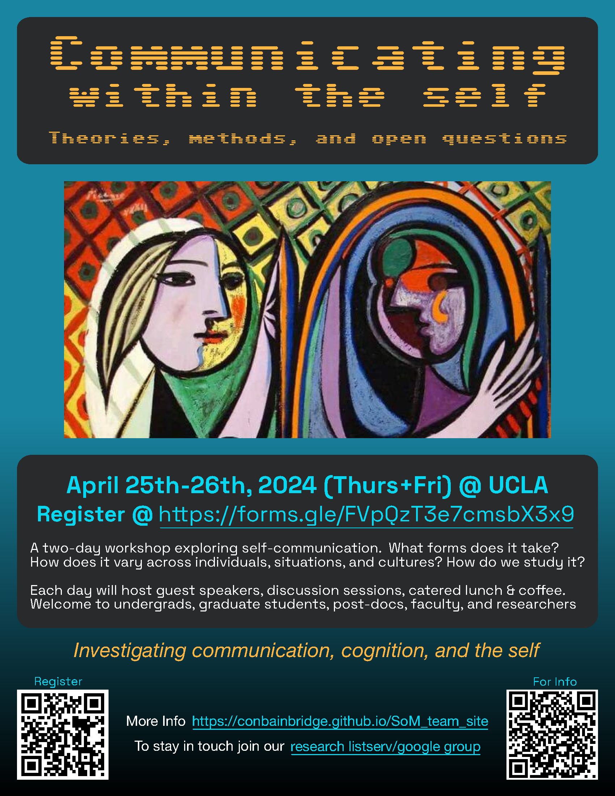

We are a cross-institution research team interested in intrapersonal communication and the ways that we can influence ourselves through various communication-like behaviors. From imagining interactions to journaling, and beyond, we are able to reflect on and shape our experiences in a qualitatively rich way. What shapes our thoughts, and how do they effect us based on how they manifest? What happens when you let yourself speak your thoughts aloud freely in the privacy of your own company? How might we use non-linguistic communication behaviors to influence ourselves or interpret the world around us?
While intrapersonal communication has in recent decades been rejected by the communication community, reduced to merely being social cognition, we hope to resurrect this umbrella term to unify topics across disciplines (e.g., communication, cognitive science, anthropology, philosophy, and more). Currently, research scattered across areas looks at self-talk in sport psychology, the effects of journaling or writing on physical and mental health, the overt private speech young children engage in, mind-wandering, and thinking aloud while engaging in user interface testing. Each of these and many other related topics, when integrated, have the potential to create a more comprehensive map of the human consciousness.
What are we up to/how do you get involved? As a lab, we currently study spoken and typed streams-of-consciousness, using online and in-lab studies. We are developing an online research lab platform where anyone (you!) can contribute to better understanding the human experience. To keep updated on our studies, please join our mailing list [link to be posted]. To get involved in the researcher side of things, discuss publications or ideas, and to learn about research opportunities in intrapersonal communication style areas, please join our researcher listserv/google group.
Join our two-day long workshop at UCLA! We will be discussing communication with the self - how do we study it, what forms does it take, and how might it vary across individuals, cultures, and situations? We will have a set of speakers with expertise related to these ideas, such as mind-wandering and measuring the function of self-talk. We'll also have discussion sessions, where you can participate! We welcome undergraduate and graduate students, post-graduates, faculty, and researchers in the Southern California area to join - any department is welcome!
Lunch will be provided on a limited basis with pre-registration. Coffee will be first-come first-serve. To sign up for the workshop, and to sign up for the lunch(es), follow the link below:


Constance/Connie focuses on researching intrapersonal communication, or how we use communication-like behaviors to influence the self, actively process our perceptual experiences, and curate our qualia as part of the complex human consciousness system. These behaviors may be inclusive of many modalities, including verbally through typing, journaling, or speaking to the self, imagining interactions, visualizations, and other mentalizations (even interoceptive awareness and mindfulness). Her ongoing dissertation work focuses primarily on streams-of-consciousness reported through language, analyzed through computational linguistic and temporal dynamics methods. She has a background studying music psychology at Harvard University under Dr. Samuel Mehr, examining human song from a developmental and evolutionary perspective. She additionally has a background in musical performance in various genres, holding a Bachelor of Music degree in violin performance from Boston University. Other previous research of hers has included auditory illusions and the perception and memorability of visual scenes and infographics (MIT under Dr. Aude Oliva), and perception of emotional communication such as group-generated vocalizations (UCLA, Dr. Greg Bryant).
Nora’s scholarship centers around the question of how we, as humans, construct meaningful categories: how these labels do and don't serve us, letting us make sense out of senselessness, connecting us with our identities and communities, enabling us to communicate and advocate, but also leading us astray, dividing us, and forestalling progress. She has investigated these questions from the perspectives of child development, linguistic relativity, neurodiversity, education policy, self-communication, and others. She also incorporates perspectives from humanistic and artistic lines, for example, through serious study of music and voice, writing about cognitive science in fiction, and personal exploration and communal leadership in spaces dedicated to her own Jewish and queer identities. She holds a BA in Linguistics from University College London, a PhD in Cognitive Psychology/Cognitive Science from Rutgers University, and completed postdoctoral research in Literacy Education Policy at New York University. She is also a proud alum of the Diverse Intelligences Summer Institute. She currently teaches in the Psychology departments at Columbia University and New York University and collaborates on research, writing, and community-building projects across institutions and disciplines.
Jack is a PhD student of Cognitive Science at UCSD. His research interests include how social interaction shapes and is shaped by cognition. He currently focuses on how children acquire the practices and norms that constitute our species' distinct way of conducting social interaction. Previously, he received his Bachelors in Cognitive Science at Dartmouth College, studied the interaction between humans and autonomous vehicle technology at MIT, and worked as a product manager and NLP engineer in industry.
Rick is a cognitive scientist in the Department of Communication at UCLA. His research involves quantifying the dynamics of cognition, with a focus on human communication. His research has touched upon language's many levels of complexity: from how it evolved, to how we carry out brief conversations. He is also interested in a wide range of other topics, such as the interface between language and action, cognitive dynamics, and theoretical issues in cognitive science. Rick and collaborators use diverse research methods, including computational modeling, analysis of naturalistic behavior, and human experimentation. These techniques can tap into a diverse range of language-related phenomena with students and collaborators: conversation, thinking in language, sentence processing, word categorization, and deception. Rick's work is motivated by the ideas and tools used in the study of complex dynamical systems. He has also taken interest in theoretical issues tying together dynamics with classical theories of cognition in a more pragmatic, plural approach to cognitive science.